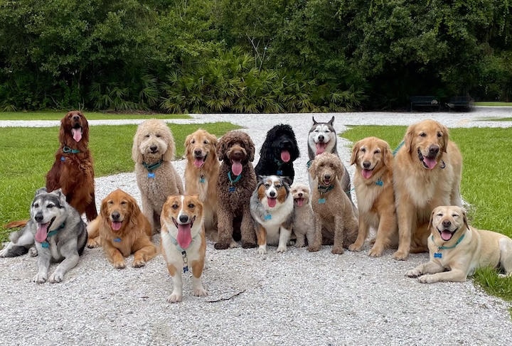

did you know that small animals with long muzzles are more likely to live longer? If you are wondering what breed(s) your dog is, here are a few different breeds that your dog might be. Different dogs need different things but if you want to be an expert on a dog breed, this website will tell you a quick summary of some common breeds.
Quick note: (this is not sponsored) Many places like Milo Foundation provide amazing rescue dogs and cat and vollenteer oportunities. They also have guinea pigs which is not as well known. Friendly remember... Do not breed your pets or buy from breeders. Their are amazing animals out there that need your help!
| Golden Retrievers | Dachshunds | Poodles |
|---|
